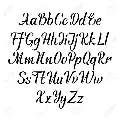
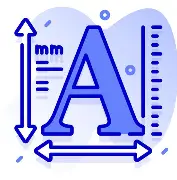
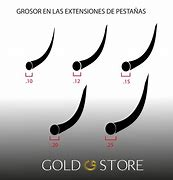
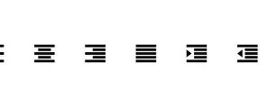
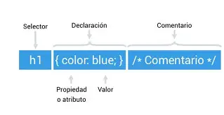

color:
Define el color del texto. Ejemplo: color: red;font-family:
Define la tipografía o fuente del texto. Ejemplo: font-family: Arial, sans-serif; 
font-size:
Controla el tamaño de la fuente. Ejemplo: font-size: 16px; font-weight:
Define el grosor del texto (normal, bold, etc.). Ejemplo: font-weight: bold; text-align:
Alinea el texto (left, center, right, justify). Ejemplo: text-align: center; text-decoration:
Añade decoración al texto (underline, line-through). Ejemplo: text-decoration: underline;line-height:
Controla la altura de las líneas de texto. Ejemplo: line-height: 1.5;Resumen: CSS tiene muchas propiedades, pero conocer estas te permitirá controlar el estilo, disposición y presentación visual de tus páginas web. La combinación correcta de propiedades permite generar interfaces atractivas y funcionales. Para profundizar, puedes consultar la documentación oficial de CSS en MDN Web Docs
